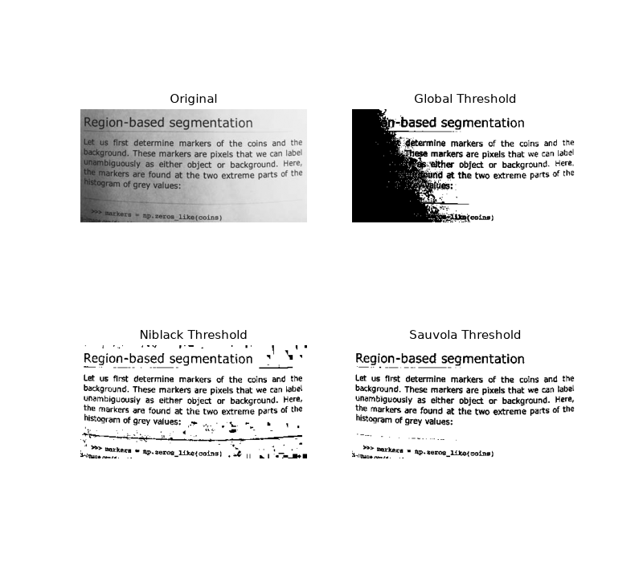

Note
Go to the end to download the full example code or to run this example in your browser via Binder
Niblack and Sauvola Thresholding#
Niblack and Sauvola thresholds are local thresholding techniques that are useful for images where the background is not uniform, especially for text recognition [1], [2]. Instead of calculating a single global threshold for the entire image, several thresholds are calculated for every pixel by using specific formulae that take into account the mean and standard deviation of the local neighborhood (defined by a window centered around the pixel).
Here, we binarize an image using these algorithms compare it to a common global thresholding technique. Parameter window_size determines the size of the window that contains the surrounding pixels.

import matplotlib
import matplotlib.pyplot as plt
from skimage.data import page
from skimage.filters import threshold_otsu, threshold_niblack, threshold_sauvola
matplotlib.rcParams['font.size'] = 9
image = page()
binary_global = image > threshold_otsu(image)
window_size = 25
thresh_niblack = threshold_niblack(image, window_size=window_size, k=0.8)
thresh_sauvola = threshold_sauvola(image, window_size=window_size)
binary_niblack = image > thresh_niblack
binary_sauvola = image > thresh_sauvola
plt.figure(figsize=(8, 7))
plt.subplot(2, 2, 1)
plt.imshow(image, cmap=plt.cm.gray)
plt.title('Original')
plt.axis('off')
plt.subplot(2, 2, 2)
plt.title('Global Threshold')
plt.imshow(binary_global, cmap=plt.cm.gray)
plt.axis('off')
plt.subplot(2, 2, 3)
plt.imshow(binary_niblack, cmap=plt.cm.gray)
plt.title('Niblack Threshold')
plt.axis('off')
plt.subplot(2, 2, 4)
plt.imshow(binary_sauvola, cmap=plt.cm.gray)
plt.title('Sauvola Threshold')
plt.axis('off')
plt.show()
Total running time of the script: (0 minutes 0.259 seconds)